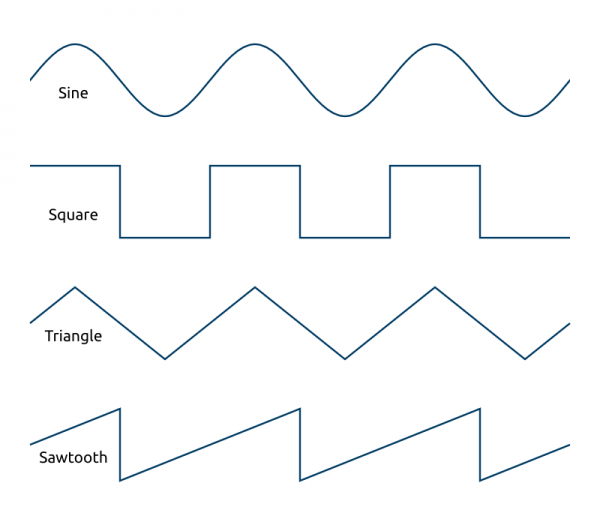
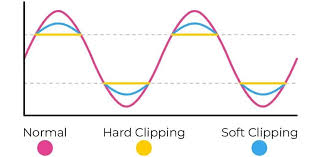
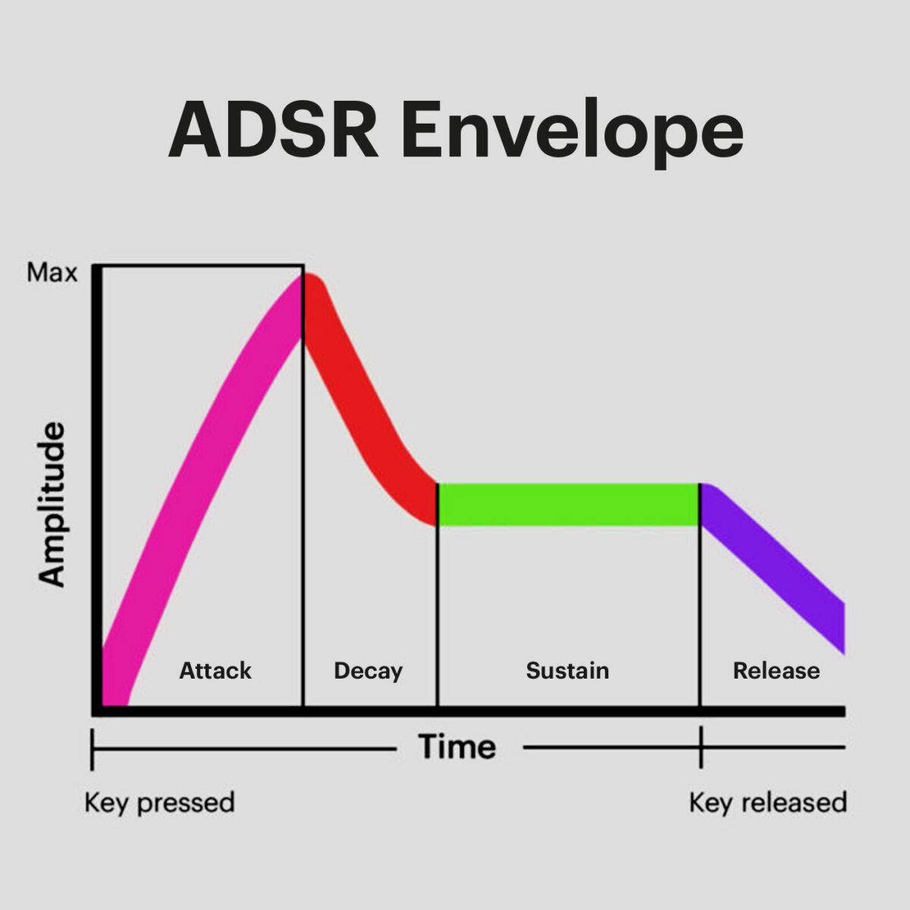

Making a Synth from Scratch Part 1
This project started simple, I wanted to learn digital signal
processing and how popular effects in music worked. But it snowballed
into making my first schematic and PCB. So I will probably split this
into two writeups, one for the software side the other for the
hardware.
What's a Synth?
A synthesizer is a musical instrument that can generate and shape audio signals by manipulating waveforms. An analog synth create sound by using electrical circuits while digital synths use code instead. In this project, I make a digital synthesizer using the C programming language.
Wave Types
There are 4 types of sound waves used in music: sine, square, triangle, and sawtooth.

Sine
In nature, every sound is actually a composite of simpler sine waves.
Additive synthesis is basically this principal, stacking multiple
individual waves together to sculpt complex timbres. Timbre is the
unique quality that allows us to distinguish between different
instruments or sounds, independent of their pitch (fundamental
frequency) and loudness.
To actually make a sine wave using C, it's about as easy as you would
expect. You can generate the waveform using the sin
function provided by math.h.
double osc_sine(double phase) {
return sin(phase); // phase is already in radians from the loop
}
Square
Square waves switch abruptly between "on" and "off" or 0 and 1. It is used frequently in electronics for keeping time. They typically have a "buzzy" sound. If you need an example, early game consoles like the NES used a them a ton (they were technically pulse waves).
To make a square wave in C you need a way to make the 0 and 1 action happen based on phase. So you could do something like this:
double osc_square(double phase) {
if sin(phase) >= 0 {
return 1.0;
} else {
return -1.0;
}
}
double osc_square(double phase) {
return (sin(phase) >= 0) ? 1.0 : -1.0;
}
Triangle
Triangle waves are a perfect balance between the pure tone of a sine wave and the buzzy bite of a square wave. Visually, they rise and fall in perfectly straight lines, forming a symmetrical pyramid shape.
Generating a triangle wave linearly requires a bit of conditional logic. Since the wave must rise for half the cycle and fall for the other half, you can check the phase. If you normalize your phase to run from 0.0 to 1.0, you can map it to an output range of -1.0 to 1.0 like this:
double osc_triangle(double phase) {
double p = phase / (2.0 * M_PI);
if (p < 0.25) return 4.0 * p;
if (p < 0.75) return 2.0 - 4.0 * p;
return -4.0 + 4.0 * p;
}
Saw
Unlike square waves that snap between two hard levels, sawtooth waves rise linearly and then drop instantly. It contains the richest harmonic profile of all the standard waveforms, which means that the sawtooth wave is the best for subtractive synthesis. It provides a massive wall of frequencies that you can carve away using filters to emulate brass instruments, bowed strings, or to create aggressive, tearing supersaw leads in modern electronic music.
You can map it directly to the phase accumulator because the wave rises linearly with time. By scaling the phase that runs from 0 to 2*pi down to a range of -1.0 to 1.0, you can implement it using:
double osc_saw(double phase) {
// phase is 0 to 2*PI, convert to -1 to 1
return (2.0 * (phase / (2.0 * M_PI))) - 1.0;
}
Wave struct
Information regarding individual waves is set by users and can be stored using the following struct:
static const double C = 261.63;
static const double C_sharp = 277.18;
static const double D = 293.66;
static const double D_sharp = 311.13;
static const double E = 329.63;
static const double F = 349.23;
static const double F_sharp = 369.99;
static const double G = 392.00;
static const double G_sharp = 415.30;
static const double A = 440.00;
static const double A_sharp = 466.16;
static const double B = 493.88;
typedef enum {
WAVE_SINE,
WAVE_SAW,
WAVE_TRI,
WAVE_SQUARE
} WaveType;
typedef struct {
char name[MAX_LEN];
WaveType type;
double volume;
double velocity;
double octave;
double pitch;
double pulse_width;
double target_freq;
double curr_freq;
double unison;
int curr_lfo;
int index;
int num_filters;
bool is_active;
int curr_filter;
int num_lfos;
FILTER ** filters;
LFO ** lfos;
double current_phase;
} WAVE;
We will cover some of these other elements later on when we cover filters and LFOs. To initialize a wave we can use the following function:
WAVE * init_wave(WAVE * dawave, int i) {
dawave->filters = (FILTER **)malloc(sizeof(FILTER *) * 1); // Start with 1 slot
dawave->lfos = (LFO **)malloc(sizeof(LFO *) * 1);
dawave->type = WAVE_SINE;
dawave->octave = 0;
dawave->pitch = C;
dawave->pulse_width = 0.5;
dawave->volume = 0.8;
dawave->velocity = 1.0;
dawave->index = i;
dawave->num_filters = 0;
dawave->num_lfos = 0;
dawave->is_active = 1;
dawave->current_phase = 0.0;
return dawave;
}
For groups of waves we use the SOUND struct, where created waves are stored and played together:
typedef struct {
int num_waves;
int num_filts;
int curr_filter;
int sample_rate;
int curr_fx;
int num_fx;
int curr_wave;
int volume;
int sound_len;
double master_volume;
double fx_send;
double stereo_spread;
double current_tempo;
double glide_time;
double pan;
FX ** fxs;
ChanType channels;
FILTER_FOCUS focus;
ENVELOPE * env;
FILTER ** glob_filters;
WAVE ** waves;
} SOUND;
Playing sound on Linux
To actually play these waves for listening on Linux, you must interface with the Advanced Linux Sound Architecture (ALSA). I will break down the basics of how this works through some simple sample code:
#include <alsa/asoundlib.h> // include the alsa header (make sure to link against `-lasound`)
#include <stdio.h>
#include <stdint.h>
void * generate(void * arg) {
SOUND * sound_data = (SOUND*)arg;
// 1. Open the ALSA PCM device for playback
snd_pcm_t *pcm_handle = NULL;
snd_pcm_hw_params_t *params;
if (snd_pcm_open(&pcm_handle, "default", SND_PCM_STREAM_PLAYBACK, 0) < 0) {
fprintf(stderr, "Cannot open PCM Device\n");
return NULL;
}
snd_pcm_hw_params_alloca(¶ms);
snd_pcm_hw_params_any(pcm_handle, params);
// 2. Hardware Configuration Configurations
snd_pcm_uframes_t period_size = 256;
snd_pcm_uframes_t buffer_size = period_size * 4;
snd_pcm_hw_params_set_access(pcm_handle, params, SND_PCM_ACCESS_RW_INTERLEAVED);
snd_pcm_hw_params_set_format(pcm_handle, params, SND_PCM_FORMAT_FLOAT_LE);
unsigned int rate = sound_data->sample_rate;
int chans = (sound_data->channels == STEREO) ? 2 : 1;
snd_pcm_hw_params_set_channels(pcm_handle, params, chans);
snd_pcm_hw_params_set_rate_near(pcm_handle, params, &rate, 0);
snd_pcm_hw_params_set_period_size_near(pcm_handle, params, &period_size, 0);
snd_pcm_hw_params_set_buffer_size_near(pcm_handle, params, &buffer_size);
// Apply the hardware parameters to the soundcard
if (snd_pcm_hw_params(pcm_handle, params) < 0 || snd_pcm_prepare(pcm_handle) < 0) {
fprintf(stderr, "Failed to initialize hardware params\n");
snd_pcm_close(pcm_handle);
return NULL;
}
// 3. Audio Render Setup
unsigned long frames_remaining = sound_data->sound_len * rate;
float buffer[256 * 2]; // 256 frames * stereo max
// Pre-calculate permanent channel gains based on master volume and pan
float left_gain = sqrt(0.5f * (1.0f - sound_data->pan)) * sound_data->master_volume;
float right_gain = sqrt(0.5f * (1.0f + sound_data->pan)) * sound_data->master_volume;
// 4. Main Processing Core
while (frames_remaining > 0) {
int frames_to_process = frames_remaining > 256 ? 256 : frames_remaining;
for (int i = 0; i < frames_to_process; i++) {
float mono_mix = 0.0f;
// Generate raw mono sine waves by iterating over active descriptors
for (int w = 0; w < sound_data->num_waves; w++) {
WAVE * wave = sound_data->waves[w];
if (!wave->is_active) continue;
// Derive the operational pitch, factoring in octaves
double pitch = wave->pitch * pow(2.0, (double)wave->octave);
double increment = (2.0 * M_PI * pitch) / rate;
// Directly write standard math library evaluation
mono_mix += (float)(sin(wave->current_phase) * wave->volume);
// Advance phase and wrap boundary conditions
wave->current_phase += increment;
if (wave->current_phase >= 2.0 * M_PI) {
wave->current_phase -= 2.0 * M_PI;
}
}
// Map and write mono mix out to interleaved target hardware layout
if (chans == 2) {
buffer[i * 2] = mono_mix * left_gain;
buffer[i * 2 + 1] = mono_mix * right_gain;
} else {
buffer[i] = mono_mix * sound_data->master_volume;
}
}
// 5. Transfer Audio Buffers to the Linux Sound Driver Ring Buffer
snd_pcm_sframes_t written = 0;
while (written < frames_to_process) {
snd_pcm_sframes_t n = snd_pcm_writei(
pcm_handle,
buffer + (written * chans),
frames_to_process - written
);
if (n == -EPIPE) { // Handle Buffer underrun state safely
snd_pcm_prepare(pcm_handle);
continue;
} else if (n < 0) {
fprintf(stderr, "ALSA system error: %s\n", snd_strerror(n));
break;
}
written += n;
}
frames_remaining -= written;
}
// Clean up resource bounds and close stream context safely
snd_pcm_close(pcm_handle);
return NULL;
}
You'll notice that I am doing the sound processing in real time as sound is playing. This introduces some challenges though. There is a period_size of 256 which means that at a 44.1 kHz sample rate, a 256 frame buffer has to take exactly less than 5.8 milliseconds to generate and play. If it's even a fraction above that even just once the soundcard runs out of data, resulting in an -EPIPE error, which sounds like an annoying click, pop, or glitch to the user.
Filters
Filters are commonly used in sound engineering and electronics. They are used to boost or reduce specific frequencies. But there are situations where filters need to be applied to individual waveforms or to a combined mix.
- Applying filters to isolated waves allows you to surgically shape the unique timbre and harmonic profile of a specific sound source. This is the foundation of subtractive synthesis, such as shaping a raw sawtooth wave into a warm brass patch and localized equalization (EQ).
- Filtering combined audio signals is typically reserved for broad mix choices or creative transitions. This includes applying sweeping low-pass or high-pass filters to create dramatic builds and tension releases, or carving out space from a backing track to make room for a main melody
As a result, the user can apply filters to both the combined mix of waves (filter config in sound struct) and individual wave (filter config in wave struct). This is the difference between the glob_filters and filters. The user can flip between a global and wave specific focus to interface with each group of filters:
typedef enum {
GLOBAL,
WAVE_SPEC
} FILTER_FOCUS;
The config for each filter is stored in a unique filter struct:
typedef enum {
HPF_F,
HPF_F_2, // the _2s here represent the biquad filters while the others are one-pole
LPF_F,
LPF_F_2,
BPF_F,
NOTCH_F,
LOW_SHELF_F,
HIGH_SHELF_F,
ALL_PASS_F,
PEAKING_EQ_F
} FILTER_TYPES;
typedef struct {
FILTER_TYPES type;
double cutt_freq;
double resonance;
double drive;
int index;
double alpha;
double gain;
double center_freq;
double prev_out[FILTER_STAGES];
double prev_inp[FILTER_STAGES];
} FILTER;
Specific Filter Implementations
To design digital filtering algorithms, we can derive them from their analog counterparts. The transfer function mathematically represents how a continuous-time circuit changes an input signal into an output signal in the Laplace domain:
$$H(s) = \frac{\text{Output}(s)}{\text{Input}(s)} = \frac{b_0s^M + b_1s^{M-1} + \dots + b_M}{a_0s^N + a_1s^{N-1} + \dots + a_N}$$
Filters are categorized by their order, which is dictated by the number of poles (roots of the denominator) and zeros (roots of the numerator) they possess.
When we convert these analog filters into the digital domain (the Z-domain), the transfer function is expressed in terms of z^-1 (which represents a single-sample delay). For example, a first-order (one-pole) digital filter is represented as:
$$H(z) = \frac{b_0 + b_1z^{-1}}{1 + a_1z^{-1}}$$
A second-order section, commonly known as a Biquad filter, is expressed as:
$$H(z) = \frac{b_0 + b_1z^{-1} + b_2z^{-2}}{1 + a_1z^{-1} + a_2z^{-2}}$$
Because these equations exist in the discrete frequency domain, we cannot implement them directly in code as-is. To convert them into the time domain for real-time processing, we apply the Inverse Z-Transform. This yields a difference equation that can be easily programmed using standard arithmetic and delays.
Effects
User inputted configuration is stored in the following effects struct:
typedef enum {
CHORUS,
FLANGER,
DELAY,
REVERB,
PHASER
} FX_TYPES;
typedef struct {
FX_TYPES type;
double time;
double feedback;
double mix;
int index;
LFO * lfo;
CHORUS_STATE * chorus_state;
CHORUS_STATE * chorus_state_L;
DELAY_STATE * delay_state;
FLANGER_STATE * flanger_state;
MASTER_REVERB * reverb_state;
PHASER_STATE * phaser_state;
} FX;
We have to make this a catch all for all effects types because a user might want to switch one out for another. The order they are played in also matters, so they are added to the sound in the order they are created in.
Distortion
There are two ways we implement zdistortion in this project: hard clipping and soft clipping. Hard clipping chops off peaks abruptly (creating square waves) for aggressive, intense distortion. Soft clipping gently rounds peaks before the limit resulting in warmer harmonic saturation.

// soft-clipping distortion
double dist_soft_clip(double input, double gain) {
return tanhf(input * gain);
}
// hard-clipping distortion
double dist_hard_clip(double input, double thresh) {
if (input > thresh) return thresh;
if (input < -thresh) return -thresh;
return input;
}
LFO
A Low-Frequency Oscillator (LFO) is used to modulate synthesis or effect parameters such as amplitude (volume), pitch, or filter cutoff frequency over time. In a practical implementation, the user selects the cyclic waveform shape of the LFO and assigns its output to a target parameter destination.
This modulation framework establishes a control signal relationship where a low-frequency wave dynamically drives a audio-rate parameter:
$$P(t) = P_{\text{base}} + (A \cdot \text{LFO}(t))$$
Where P(t) is the modulated parameter value at time t, P_{\text{base}} is the static baseline value, A is the modulation depth (or intensity), and LFO(t) is the normalized value of the oscillator waveform at that specific sample.
double LFO_imp(double input, int sample_rate, LFO * lfo) {
double phase_inc = lfo->rate / lfo->sample_rate;
lfo->curr_phase += phase_inc;
if (lfo->curr_phase >= 1.0) {
lfo->curr_phase -= 1.0;
}
double output = 0.0;
switch (lfo->type) {
case WAVE_SINE:
output = sin(lfo->curr_phase * 2.0 * M_PI);
break;
case WAVE_SAW:
output = (lfo->curr_phase * 2.0) - 1.0;
break;
case WAVE_SQUARE:
output = (lfo->curr_phase < 0.5) ? 1.0 : -1.0;
break;
case WAVE_TRI:
double saw = (lfo->curr_phase * 2.0) - 1.0;
output = 2.0 * fabs(saw) - 1.0;
break;
default:
output = 0.0;
break;
}
return input + (output * lfo->depth);
}
Chorus, Flanger, and Phaser
A chorus effect emulates multiple musicians playing the same part in unison. Because real humans cannot play perfectly in time or perfectly in tune, the digital equivalent achieves this by taking the input audio, delaying it by a constantly shifting amount (causing minor pitch bends via the Doppler effect), and mixing it back with the original sound. We use an LFO to modulate the delay time. In the end the "wet" (sound after effect) and "dry" (original sound) are mixed.
Flanger is very similar to chorus, but instead it uses a shorter delay time to make a sweeping sound.
A phaser duplicates the signal but runs it through all-pass filters to create sweeping peaks and notches in the frequency spectrum, producing a swirling, "whooshing" sound.
For these effects we use structs to hold incoming audio samples and configuration information:
typedef struct {
double buffer[MAX_CHORUS_SAMPLES];
int write_head;
double lfo_phase;
} CHORUS_STATE;
typedef struct {
double min_freq;
double max_freq;
double lfo_phase;
double Q;
double phase;
ALL_PASS_STATE filter[NUM_PHASER_STAGES];
} PHASER_STATE;
typedef struct {
double buffer[MAX_DELAY_SAMPLES];
int write_head;
double depth_samples;
double base_delay_samples;
double lfo_value;
int buffer_size;
} FLANGER_STATE;
Delay
Delay acts like a tape recorder that constantly records incoming audio and plays it back a split second later. By blending that delayed playback with the original live sound, you get an echo effect. If you then add a feedback loop where a portion of that delayed output is sent back into the recorder to be delayed again you'll get a series of decaying echoes that fade out over time.
In DSP, a delay is implemented using a circular buffer (or ring buffer). Instead of constantly shifting data around in memory (which is incredibly slow), the data stays in a fixed array, and two pointers move around it in a circle.
typedef struct {
double buffer[MAX_DELAY_SAMPLES];
int write_head;
double delay_samples;
} DELAY_STATE;
1D Convolutions
Convolutions are commonly used in both DSP and ML. You can either do a Direct Convolution or a FFT Convolution.
- Direct convolution is the type commonly used in ML. It calculates the output by physically sliding one array over the other, multiplying overlapping elements, and summing the results. It has a O(N\times M) complexity
- FFT Convolution uses the convolution theorem, which states that convolution in the time/spatial domain is equivalent to simple, element-wise multiplication in the frequency domain. So this works by converting both the signal and the filter to the frequency domain using the FFT, multiplies them, and converts the result back to the original domain using an inverse FFT. It has O(N\log N) complexity.
We will use FFT convolutions because they perform way better as the amount of data increases. We are likely going to be dealing with a ton of samples and direct convolution could kill your cpu.
Reverb
Reverb is like thousands of those echoes happening so fast and so close together that they blur into a continuous wash of sound. There are two ways we can construct this through code: Algorithmic Reverb and Convolution Reverb.
Instead of mimicking a real space exactly, algorithmic reverbs use complex networks of delays, feedback loops, and filters to trick the ear into hearing a space. A classic approach is the Schroeder Reverb Predictor, which pipes audio through multiple structures in parallel and series:
- Comb Filters: Used in parallel to build up a high density of quick echoes.
- All-Pass Filters: Used in series to smear the phase of the audio, diffusing the sound so it feels smooth and lacks distinct metallic "ringing" pitches.
Instead of synthesizing a fake space using delays and filters, convolution reverbs capture the sound of a real space and imprint it onto your audio. This is called an Impulse Response (IR), which is recorded by playing a sound in a room to see exactly how that space echoes and decays. A classic implementation in code involves loading this IR file and applying it to your audio using one of two approaches:
- Direct Time-Domain Convolution: The audio input is multiplied by the impulse response sample-by-sample.
- FFT Partitioned Convolution: The audio and the IR are sliced into small blocks and converted into the frequency domain using the Fast Fourier Transform (FFT).
The convolution reverb is better from a realism standpoint but algorithmic reverb is a lot better efficiency wise.
Envelope
An envelope determines how a parameter changes over time. It is not the same as an LFO, though. The difference is that an envelope is a shape that reacts to playing a note, while an LFO is a repeating cycle that runs continuously. It is governed by an Attack, Decay, Sustain, and Release.
This is implemented in this code with an update_envelope function that will continuously update the volume of the sound.
